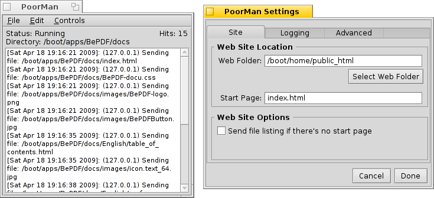

Slovenčina
Slovenčina Català
Català Deutsch
Deutsch English
English Español
Español Français
Français Italiano
Italiano Magyar
Magyar Polski
Polski Português
Português Português (Brazil)
Português (Brazil) Română
Română Suomi
Suomi Svenska
Svenska 中文 ［中文］
中文 ［中文］ Русский
Русский Українська
Українська 日本語
日本語 PoorMan
PoorMan
| Panel: | ||
| Umiestnenie: | /boot/system/apps/PoorMan | |
| Nastavenia: | ~/config/settings/PoorMan Settings |
PoorMan je pekný, malý webový server, ktorý sa extrémne ľahko nastavuje. Neobsahuje samozrejme žiadne z pokročilejších funkcií ťažkého serverového softvéru, je to predsa len chudákov webserver (poor man = chudák).
Pri prvom spustení sa PoorMan spýta, ktorý priečinok chcete nastaviť ako webový priečinok. Ak si zvolíte ten , vytvorí sa nový súbor v /boot/home/public_html. Tu musí byť prítomná aj úvodná stránka predvolene pomenovaná index.html .
PoorMan ponúka jednoduchú konzolu, do ktorej zaznamenáva svoju aktivitu. Ďalej obsahuje informácie o stave behu servera, adresu webového priečinka a počítadlo zásahov. Nastavenia sa môžu meniť v :

Panel nastavení je rozdelený na tri karty:
V môžete vybrať ďalšie webové priečinky, zadať ďalšiu úvodnú stranu a máte tiež možnosť poslať výpis súborov ak úvodná stránka neexistuje.
vám umožňuje de/aktivovať záznam do konzoly alebo voliteľne do samostatného súboru.
Záložka obsahuje nastavenie maximálneho počtu súčasných pripojení.
Položky menu okna konzoly majú z názvov vyplývajúce použitie. S nimi môžete napr. ukladať (časti) konzolového výstupu, vyčistiť konzolu alebo súbor záznamu a spustiť/ukončiť server alebo vyčistiť počítadlo zásahov.